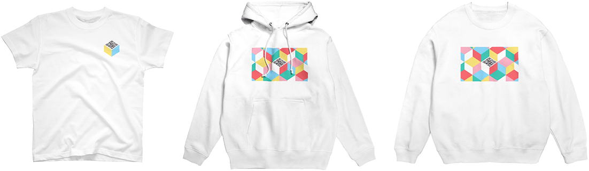

あそべるアパレルVRT
VRT#1は「すこしだけ世界を味方にする服」というコンセプトのあそべるアパレルライン。
仲良くなりたい人がいる。でもコミュニケーションってうまくいかないことも多いもの。
VRT#1は【服という日常に欠かせない要素】に【QRコードの意外性】をプラスしてコミュニケーションを設計します。
服にQRコードって突拍子もない！
でも、QRコードはスマホを扱える人であれば誰もが「スマホで読み取るもの」と言う世界共通の認識を持っています。
街で見かけるQRコードは広告やキャンペーンに使われますが、それが服についていたら…？ちょっと変？
そんなすこしの違和感と意外性で、今日一日あなたと出会う人とのコミュニケーションのきっかけを提供します。
QRコードはまた、スマホを持っていれば誰でも読み取ることができて、検索したりURLを入力したり、ましてやアプリをインストールするよりもっと手軽なツールです。

VRT#1にデザインされたQRコードは、アクセスするとWebVRの簡単なゲームで遊ぶことができます。
ゲームの作り自体はシンプルなものですが、スマホを傾けると景色も傾くWebVRは出会った人に新鮮な驚きを提供します。
VRT#1があなたにとって、すこしだけ世界を味方にする装置となりますように。
Webショップへ